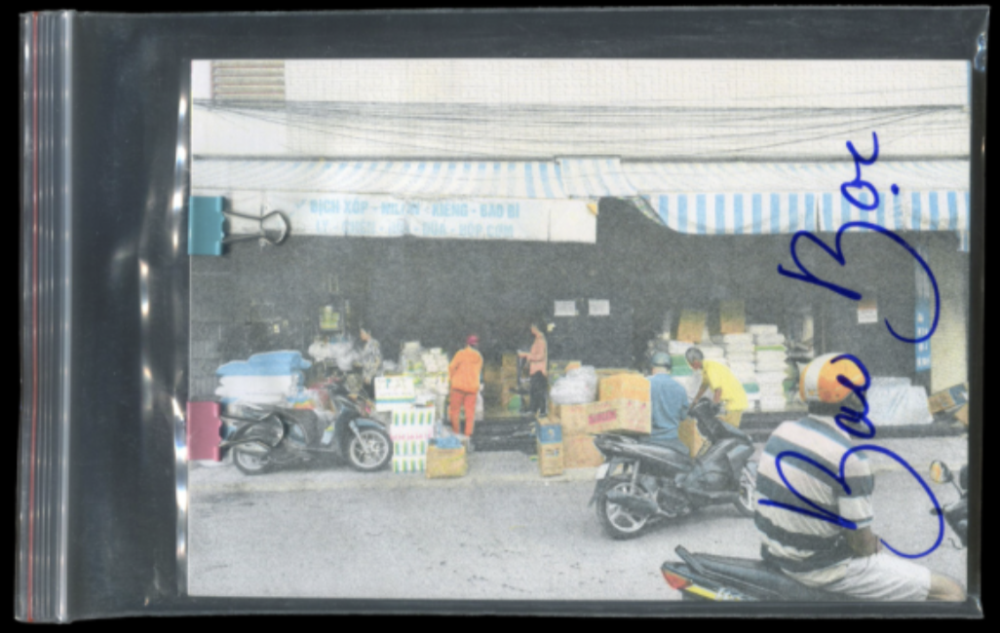
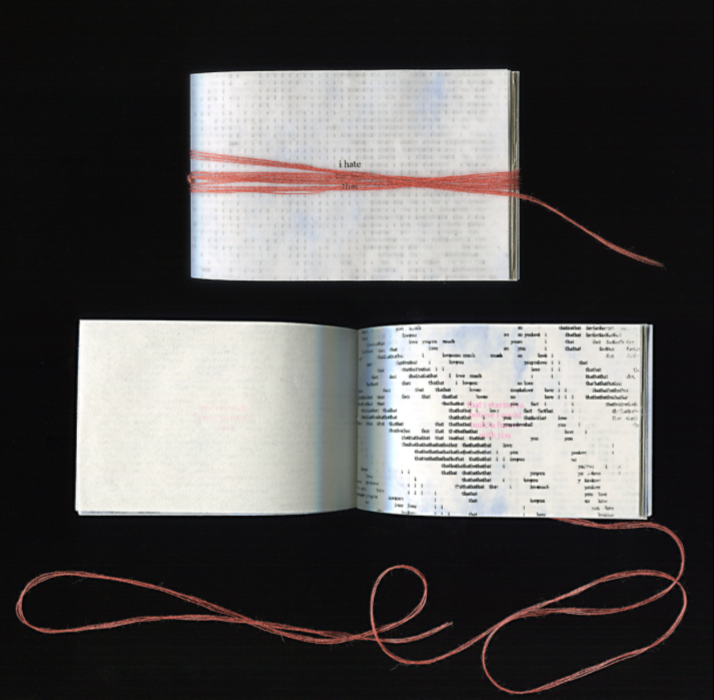
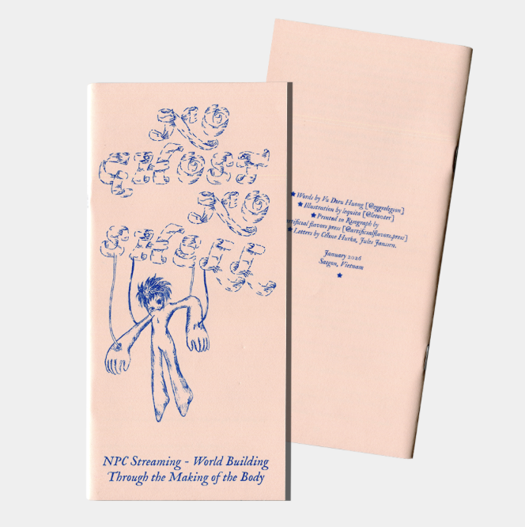
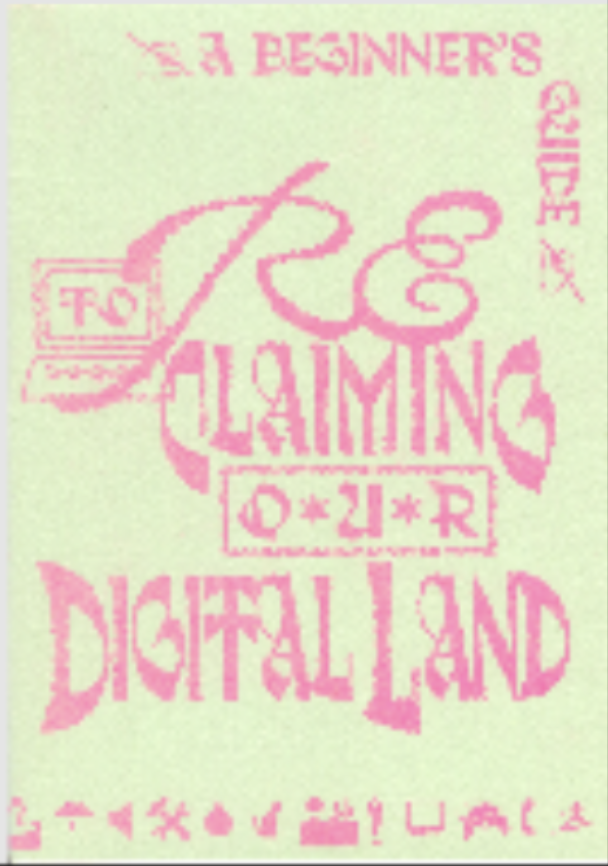
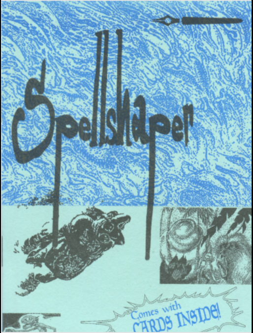
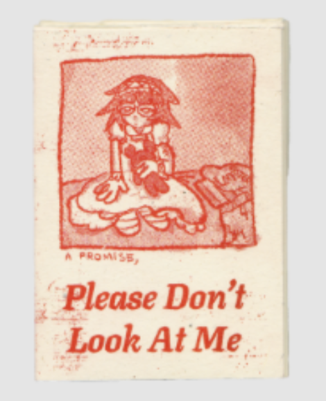

Bao Bọc
Cong Danh
artificial flavours press

Danh's first zine is a personal perspective on a business household and aims to resonate with those who have grown up thanks to small businesses.
Based in: Vietnam
Translations:
i hate the fact that
Ngoc Vo
artificial flavors press

an extension zine born from real-time thoughts processing a recently ended relationship. Words that have been said, while feelings remain.
No Ghost No Shell
Vu Dieu Huong
artificial flavors press

this little zine compiles a text that examines NPC streaming through the lens of digital embodiment and cyberfeminism by introducing the figure of the “witch” — a new digital woman emerging from the NPC streaming phenomenon.
Pandora of Our Beloved Sea
Ngọc Võ, Yui Nguyễn
artificial flavors press

this zine shall be a lucid dream where you experience the land of Ninh Thuan on the cell level.
Reclaiming Our Digital Land
Quang Anh, Ngọc Võ
artificial flavors press

A zine about reclaiming our technology from controling corportions.
Spellshaper
the.bluish.tram
tàu hũ ky collective

A fanzine about Magic: the Gathering and lessons from 10 years ò playing. Each copy comes with a random Commander.
Riso Obscura
gunpointwedding
artificial flavors press

A Risograph zine that guides the reader from making their Risograph print - color separation and distributing their print in Vietnam.
Please Don't Look at Me
Nam Nguyễn
Vietnam

i sat the past few days wondering if i should ever share this zine. i made this as something for me to read and let go but unsure if i can. 'Please Don't Look At Me' is a story i wrote about trust, cutting strawberries for yogurt, betrayal, waiting and leaving.